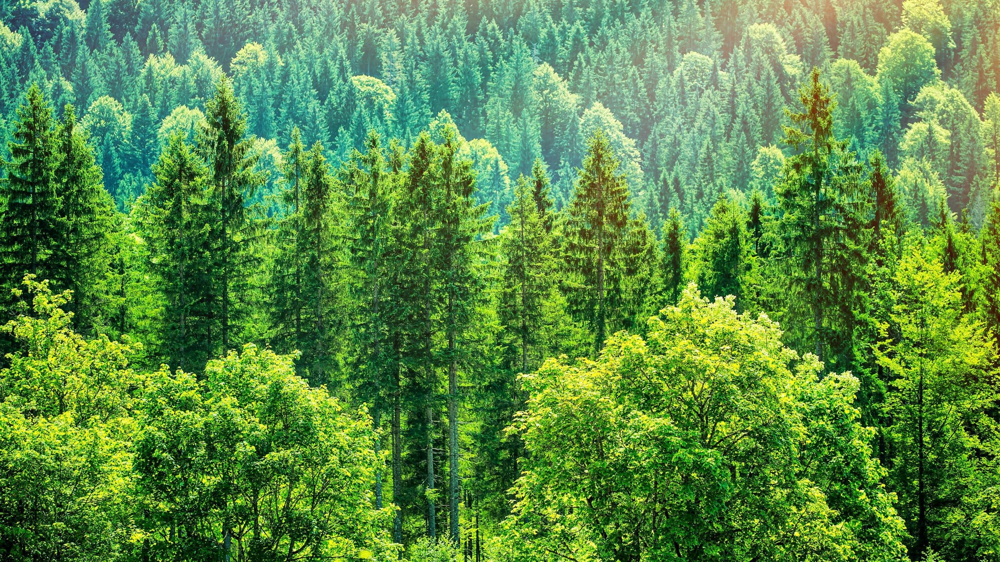
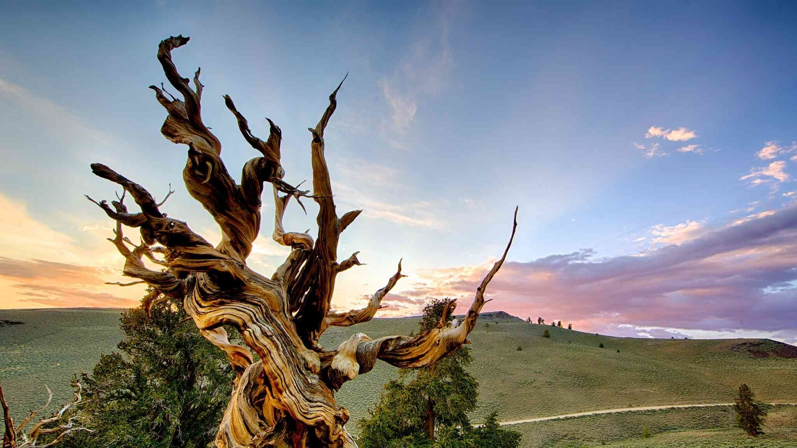
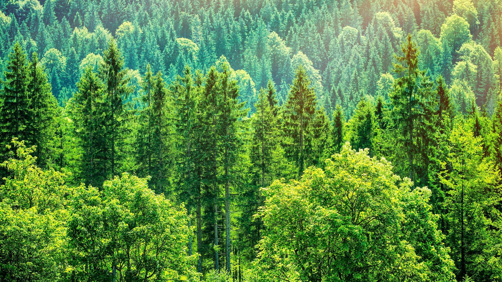
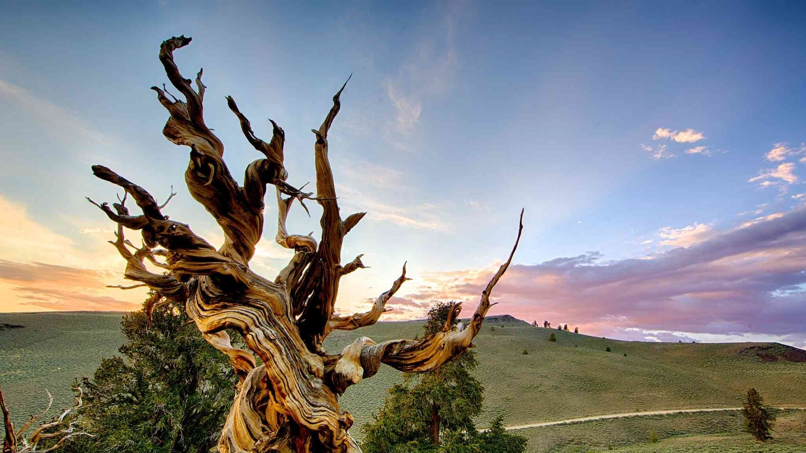

In botany, a tree is a perennial plant with an elongated stem, or trunk, usually supporting branches and leaves. In some usages, the definition of a tree may be narrower, including only wood plants with secondary growth, plants that are usable as lumber or plants above a specified height. In wider definitions, the taller palms, tree ferns, bananas, and bamboos are also trees. Trees are not a taxonomic group but include a variety of plant species that have independently evolved a trunk and branches as a way to tower above other plants to compete for sunlight.
Here you can find few links that taught us everything we know about trees, also don't miss out on fun fact about the trees.